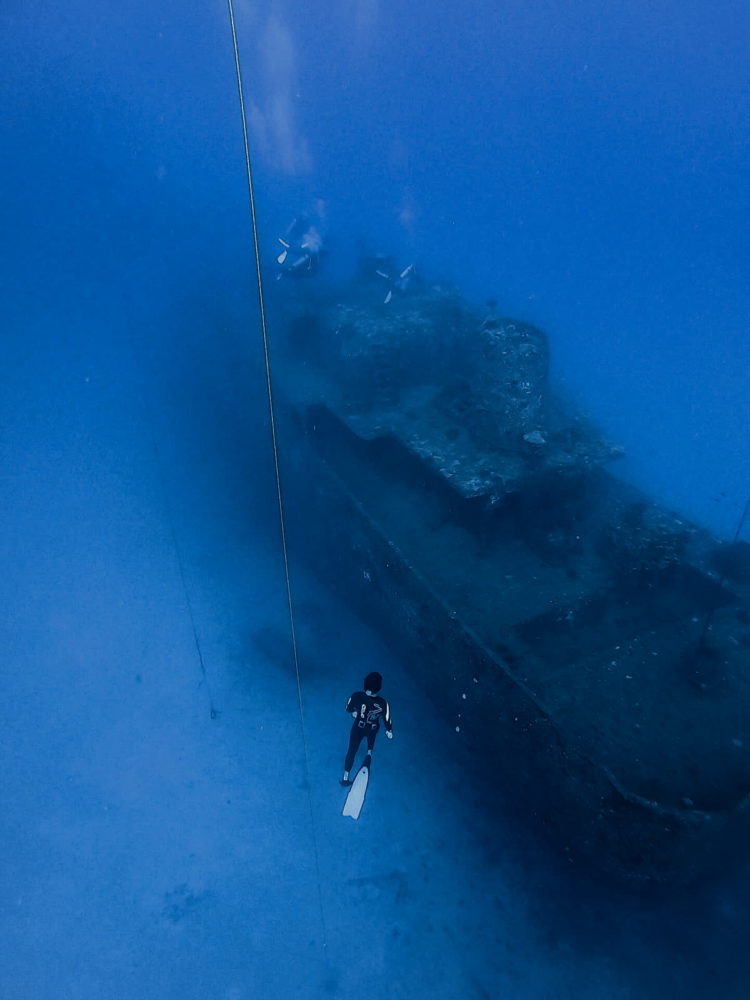

I · The surface
On one breath
About Harry.
Long before the deep, there was the river — a Winchester College First VIII oarsman at fifteen, a GB Rowing trialist. And before the ocean, the deep he loved was overhead: an astrophysics undergraduate whose first vast, silent place was the night sky.
Then, locked down in Hawai'i during Covid, Harry took a breath and went underwater. That hobby became a calling. Back in the UK in 2020, a friend brought him to a depth camp in the cenotes of the Yucatán; those days with Johnny Sunnex left an indelible mark. By 2022 he was on his way to Dominica — a volcanic island ringed by deep, clear water — and committed completely.
In the early days it was just about getting in the water with friends to escape quarantine, but as I followed the wet breadcrumb trail — it kept giving back.”— Harry McCahill

The early days, diving the wrecks of Hawai'i with Will Melville